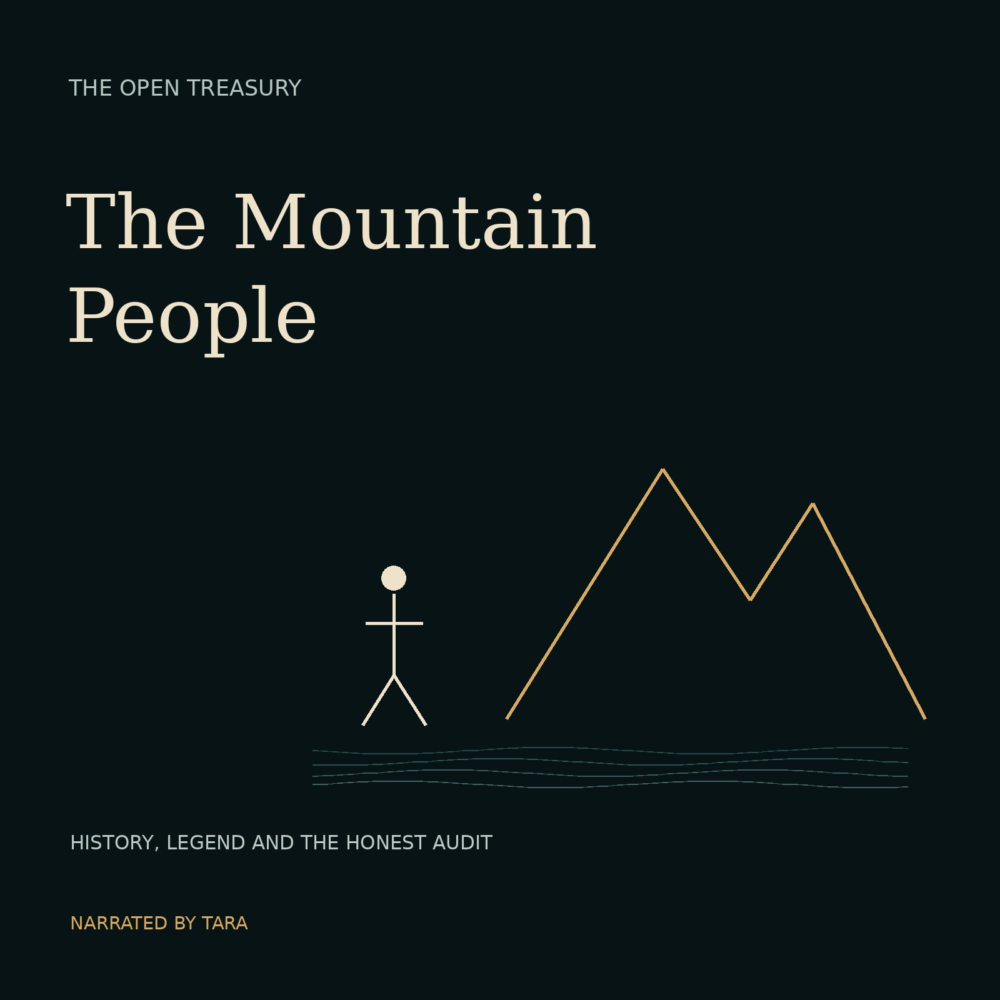

The Mountain People
A course on the Taoist immortals.
Mountain recluses, imperial searches, Peng Zu, Ge Hong, the Queen Mother of the West, the Eight Immortals, internal alchemy and the histories behind lineage stories. What did people claim, and what can we verify?
Sacred biography is not a birth certificate. No biological immortality or validated extraordinary lifespan is established. Qin Shi Huang's mercury death remains a hypothesis, not a forensic finding. Retrospective lineage diagrams and legendary tai chi origins are not treated as continuous historical proof.
History and philosophy, not medical advice or practice transmission. No ingestion recipe, breath-retention plan, fasting regimen, sexual method or teacher-restricted exercise is provided. Modern exercise evidence cannot validate an ancient immortality claim.
Chapters
- 00:00 - The Character
- 02:07 - The First Immortals
- 04:58 - The Methuselah of China
- 07:01 - The Master Who Embraced Simplicity
- 10:03 - Deliverance from the Corpse
- 11:49 - The Scholar with the Sword
- 14:42 - The Woman at the Western Edge
- 18:27 - The Eight
- 21:26 - The Inner Laboratory
- 25:00 - How a Family Tree Grows Backward
- 29:31 - The Dragon Gate and the Khan
- 32:21 - The Man Who Maybe Wasn't
- 35:46 - The Immortal in the Museum
- 40:02 - History vs Legend: The Verdict
Sources and complete script
Source, rights and audio notes
Complete spoken script
Rights and narration
Original synthesis and paraphrase, with limited adapted wording from James Legge's historical Zhuangzi translation. Third-party rights remain separate; no blanket combined-media CC0 claim. Original symbolic moving visuals; no modern artwork, museum photographs or music.
AI narration in Aoede; Chinese and specialist-name pronunciation approximate. Full automated wording comparison and targeted checks, not a full human-ear certification. Two paragraph repairs for wording clarity. Gain and transparent peak limiting only, no speed, pitch or EQ change. Listening MP3: 128 kbps mono, -17.89 LUFS, -1.74 dB true peak.
Free listening without ads, paid access, sponsorship or support solicitation.
Got a question? Ask Tara - the best listener questions become short answer episodes.